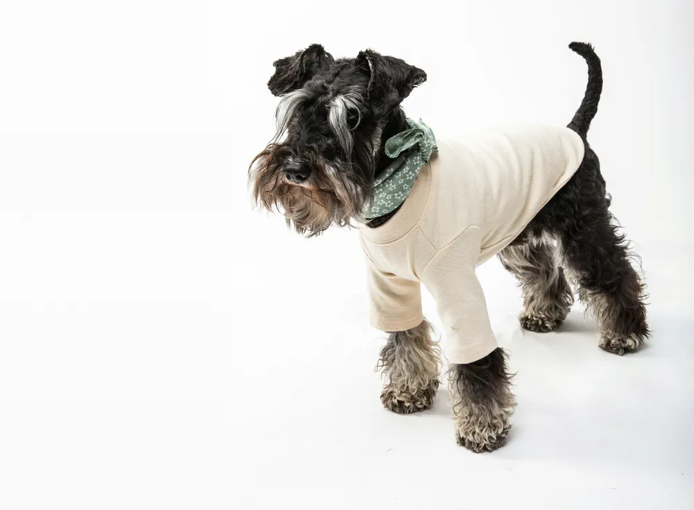
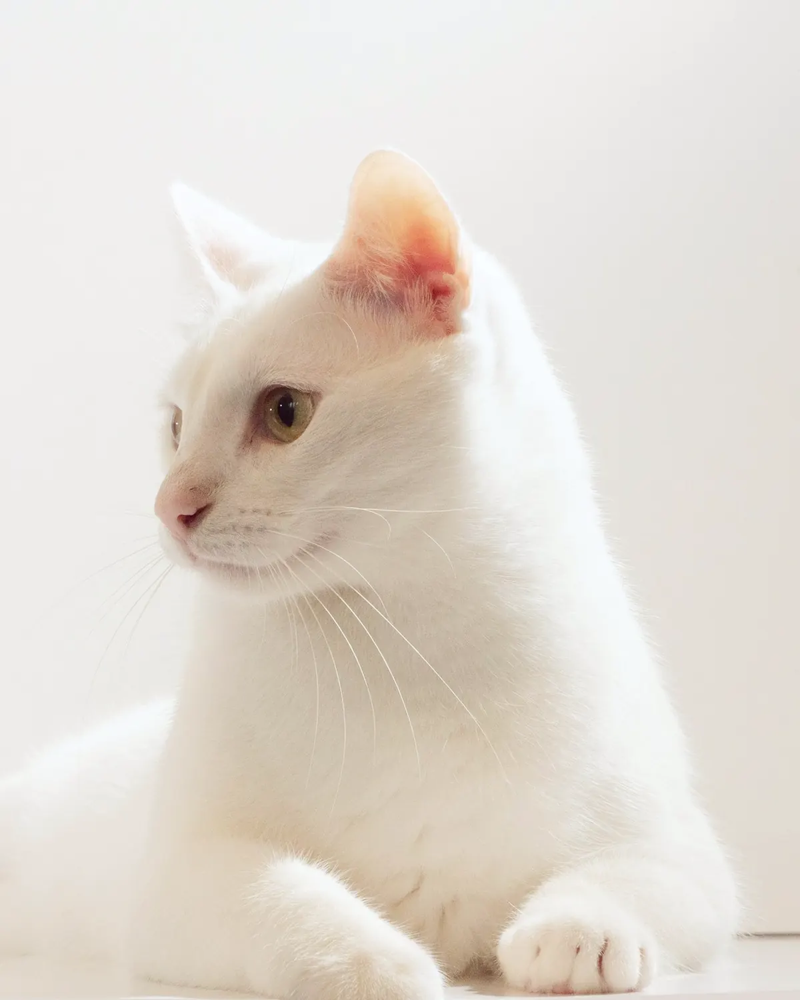
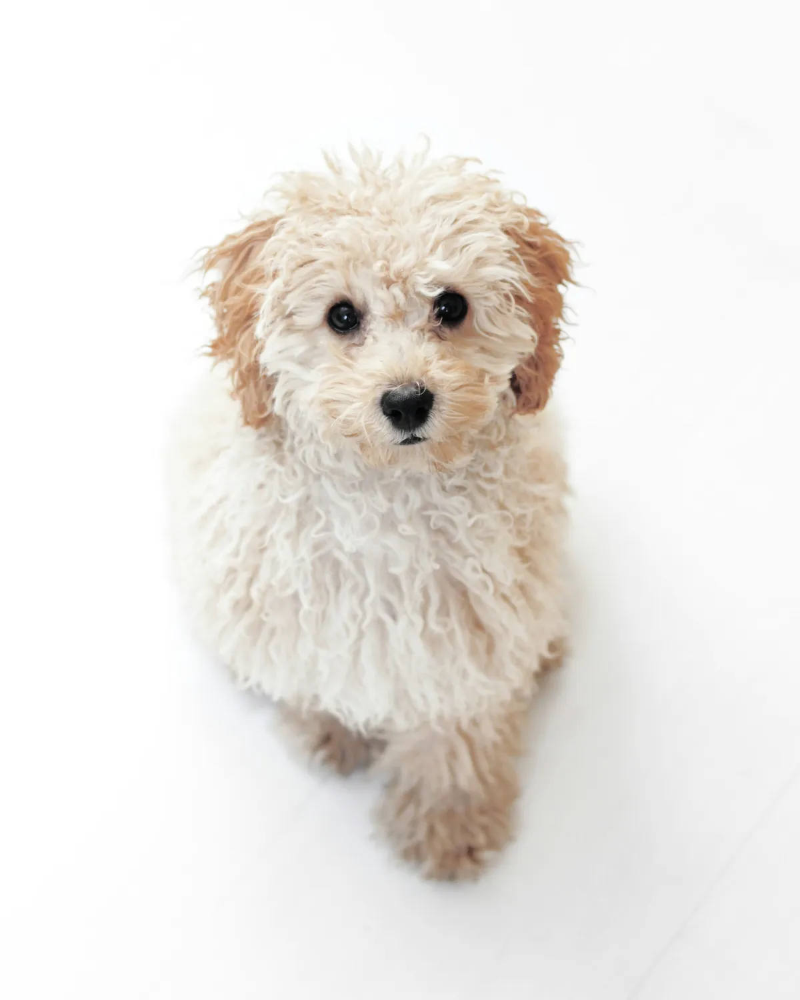
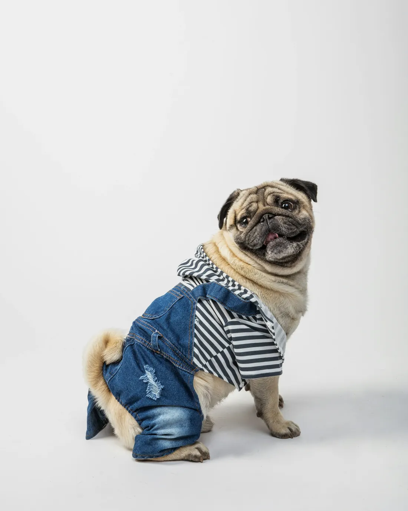

Pet shop · Banho e tosa · Canoas
Tipo Gente

Banho e tosa para cães e gatos tratados como gente, sem gaiolas.
Agendar banho e tosa 4,8 no Google · 65 avaliações01A casa
Aqui, bicho é tratado tipo gente
A Tipo Gente é o pet shop de banho e tosa da Rua Major Sezefredo, em Mal. Rondon. As donas são protetoras de animais: além do banho de todo dia, dão banho em bichos resgatados das ruas, com horário marcado, e ajudam a encontrar quem adote. Quem leva conta que o pet volta cheiroso, escovado e de pelo macio.
- Sem gaiolasO ambiente da loja é livre de gaiolas.
- Banho de resgatadosCom horário marcado, para quem tira bicho da rua.
- Apoio à adoçãoAjuda para os resgatados encontrarem um lar.

“Cris há anos atua nas causas animais e só quem se propõe a isso ama.”
Tamara G., no Google
02Serviços
Banho, tosa e todo o cuidado em volta
Valores e horários livres, você combina direto pelo WhatsApp.

03Avaliações
Quem leva, recomenda
4,8no Google, em 65 avaliações“A melhor petshop de Canoas. Meus filhotes só tomam banho na Tipo Gente há mais de 5 anos.”
Paula C.
“Simba vai desde bebê na Pet Tipo Gente e gostamos bastante! Sai sempre cheiroso, o pelo macio, limpinho e tosado do jeito que pedimos.”
Gisele D.“O diferencial é o atendimento, as gurias são maravilhosas e tu vê gostam de bichos.”
Tamara G.“As proprietárias são protetoras de animais, o que aumenta ainda mais a confiabilidade nos serviços. Meus viralatas voltam impecáveis semanalmente.”
Iuna H.“Gostei bastante do atendimento e do cuidado com o meu gato! Ao mesmo tempo, elas dão banho nos animais que resgato nas ruas (com prévio agendamento), algo raro em pets!”
Rony J.
04Visite
Loja 103, na Major Sezefredo
Rua Major Sezefredo, 1085, loja 103
Mal. Rondon, Canoas, RS, 92020-570
- Segunda a sexta
- 9h às 18h
- Sábado
- 9h às 12h
- Domingo
- Fechado
Entrada acessível para cadeira de rodas. Aceita cartão de crédito, débito e pagamento por aproximação.

Recado de quem fez esta página
Para a equipe da Tipo Gente
Sou o Conrado Lemos, desenvolvedor aqui de Canoas. Montei esta página para mostrar como pode ficar o site de vocês. Tudo acima é o que o cliente veria.
- A nota, as avaliações, os horários e os serviços vieram do perfil de vocês no Google.
- Todas as fotos são ilustrativas, de banco de imagens. Na versão final entram fotos profissionais da loja, da equipe e dos bichos que vocês atendem.
- Textos, serviços e avaliações em destaque são revisados e escolhidos por vocês.
- Vi que vocês já têm o tipogente.com.br. A página nova pode entrar nesse mesmo endereço.
R$ 1.000, com o site no ar em até 3 dias No domínio próprio de vocês. O pagamento é só na entrega, depois da aprovação de vocês. O domínio é à parte, cerca de R$ 40 a R$ 55 por ano.
Gostaram? É só responder a minha mensagem no WhatsApp.